Percentiles and five number summaries
STA 150, Marshall UniversityAnna Mummert
Percentiles
We have looked at the mean and standard deviation.
Today we will look at another way of analyzing the spread of data, using percentiles.
Percentiles
The median is the 50th percentile - half the data is less than or equal to the median.
Other percentiles are defined the same way:
- The 25th percentile is the data point which is greater than or equal to 25% of the data.
- The 75th percentile is the data point which is greater than or equal to 75% of the data.
- The 90th percentile is the data point which is greater than or equal to 90% of the data.
- And so on...
The maximum element is the 100th percentile
We define the 0th percentile to be the minimum element
Finding 25th and 75th percentiles
The 25th and 75th percentiles can be found with a simple method.
This data set has 15 elements:
3 3 3 4 6 7 8 8 9 10 10 11 12 13 13
The median is 8.
To find the 25th percentile, find the median of the data that is below the median. This will be 4.
To find the 75th percentile, find the median of the data that is above the median. This is 11.
We don't use the median data point in these calculations.
There are other conventions for these, but we will follow this one when we do hand calculations. SPSS will give slightly different answers.
Quartiles
The quartiles values of a data set divide it into four parts, each of which has about the same number of data points.
- Q0 - the minimum
- Q1 - the 25th percentile value or lower quartile
- Q2 - the median
- Q3 - the 75th percentile value or upper quartile
- Q4 - the maximum
These five numbers are called the five number summary of the data.
The interquartile range (IQR) is the difference between Q1 and Q3.
The IQR is another measure of variation - it tells how much the data is spread out.
Box plots
Box plots are a way to visualize the five number summary.

These are also called box and whisker plots
They are most useful when used to compare several data sets.
Check your understanding
Identify the five-number summary and any outliers of the data shown in the box plot.
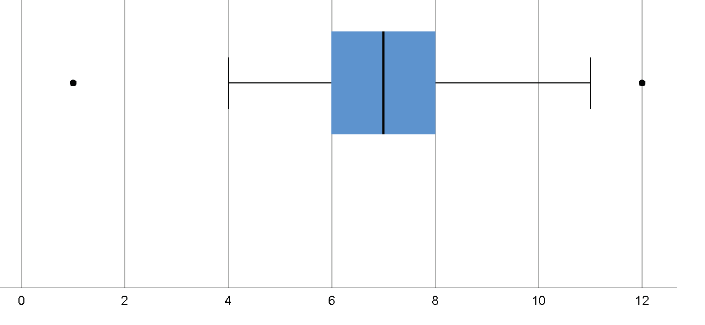
- Five-number summary
- Min (Q0) = 1; Q1 = 6; Median (Q2) = 7; Q3 = 8; Max (Q5) = 12
- Outliers
- Small outlier at 1; Large outlier at 12
Finding other percentiles
There is a way to find any percentile in a data set.
- Write the percentile as a decimal.
- Multiply by the size of the data set ($n$)
- Round up. Take this data point.
For example, let's find the 30th and 90th percentiles of this data set with $n = 15$.
3 3 3 4 6 7 8 8 9 10 10 11 12 13 13
- 30th percentile: $0.3 \times 15 = 4.5$. So we take the 5th data point, 6. This is the first data point that is greater than or equal to 30 percent of the data.
- 90th percentile: $0.9 \times 15 = 13.5$. So we take the 14th data point, 13. This is the first data point that is greater than or equal to 90 percent of the data.
Using IQR to detect outliers
The interquarticle range is Q3 - Q1. It tells how much the middle half of the data is spread out.
SPSS uses the IQR to detect outliers.
Data that is more than 1.5 IQR above Q3, or more than 1.5 IQR below Q1, is considered an outlier.
This is not a perfect test, because it does not take the meaning of the data into account.
Box plots and Histograms
Box plots and histograms both display quantitiative data.
Both help you visually assess central tendancy, variation, and outliers.
Use histograms to see the distribution of your data - peaks, gaps, distribution of frequencies.
Use box plots to compare several data sets. Outliers and the five-number summary are clearly indicated.
Unimodal - one peak
$N = 500$, $\overline{x} = 2.07$, $s = 1.01$, median$= 2.00$, mode is near tallest bar (center)
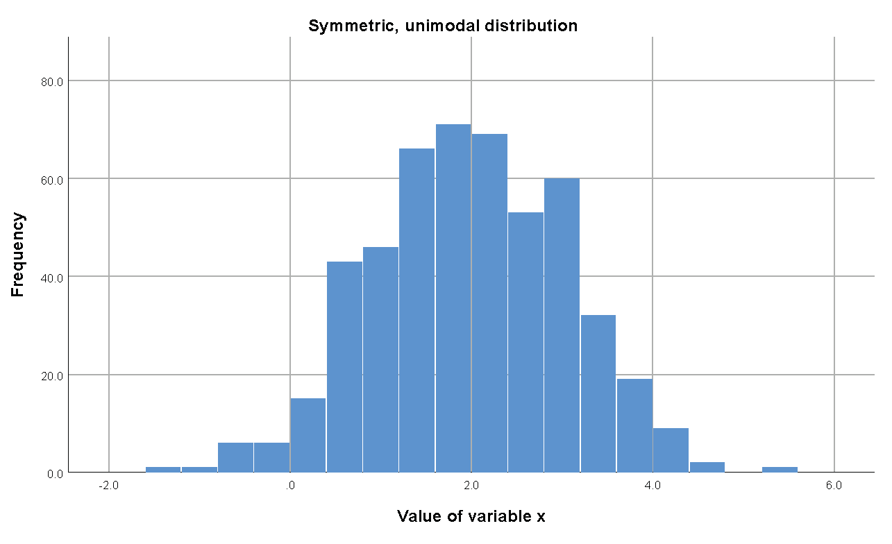 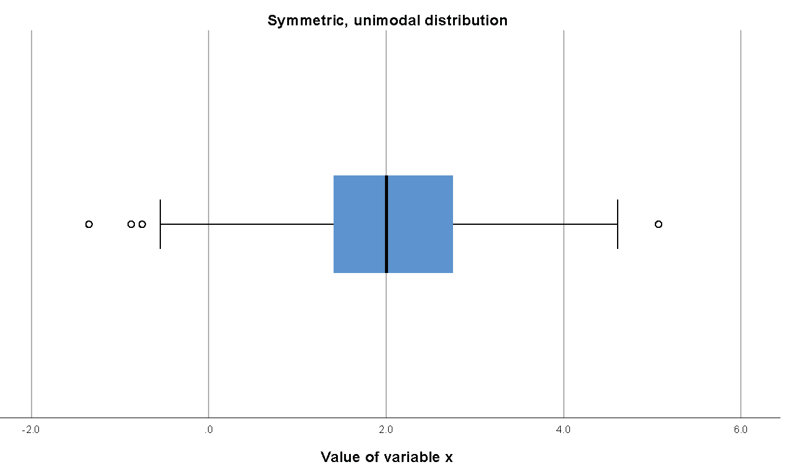Bimodal - two peaks
$N = 500$, $\overline{x} = -0.99$, $s = 3.40$, median$= -0.28$
Two modes - near each of the two tallest bars
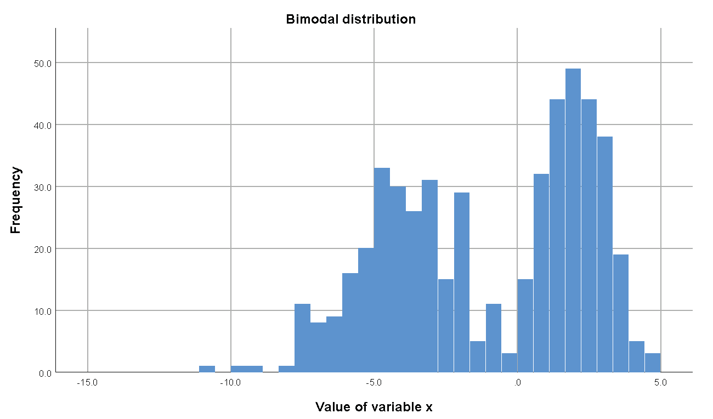 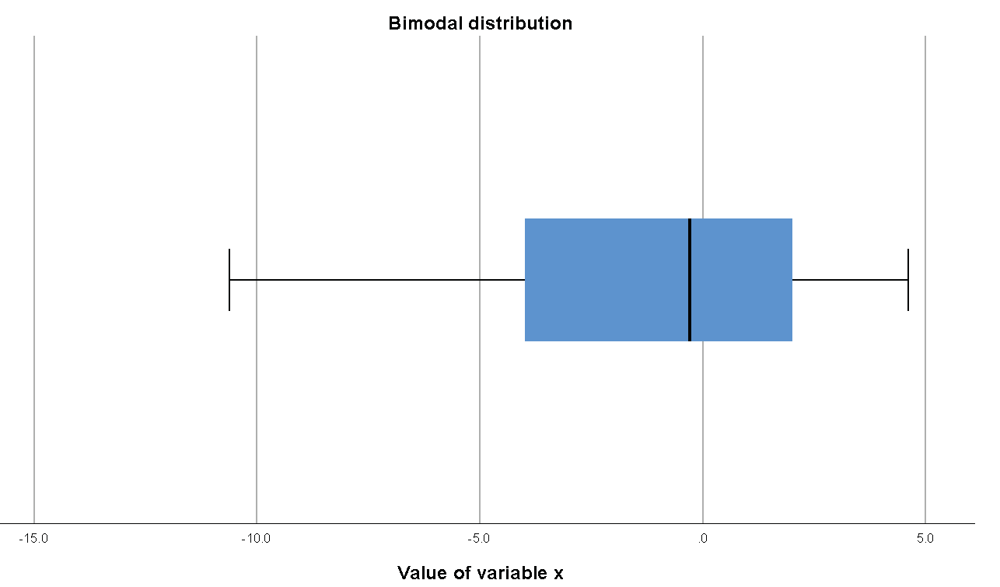Left Skewed
$N = 500$, $\overline{x} = 1.83$, $s = 0.64$, median$= 1.96$, mode is near tallest bar
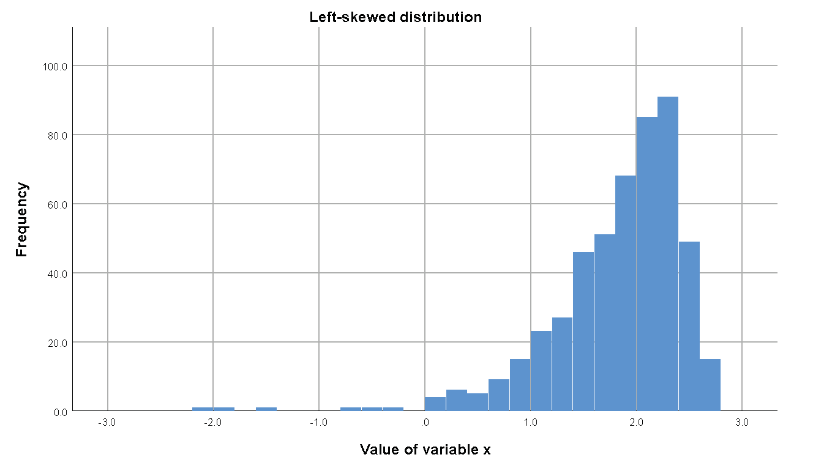 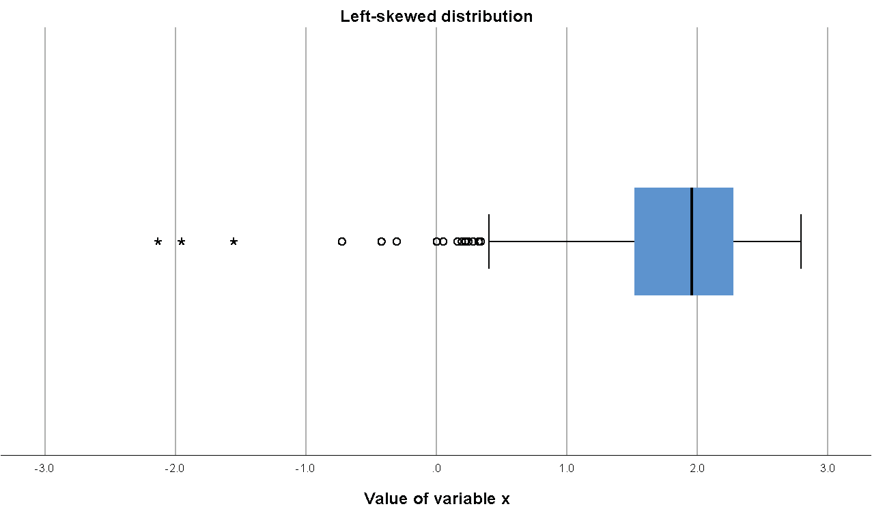Right Skewed
$N = 500$, $\overline{x} = 1.20$, $s = 0.65$, median$= 1.06$, mode is near tallest bar
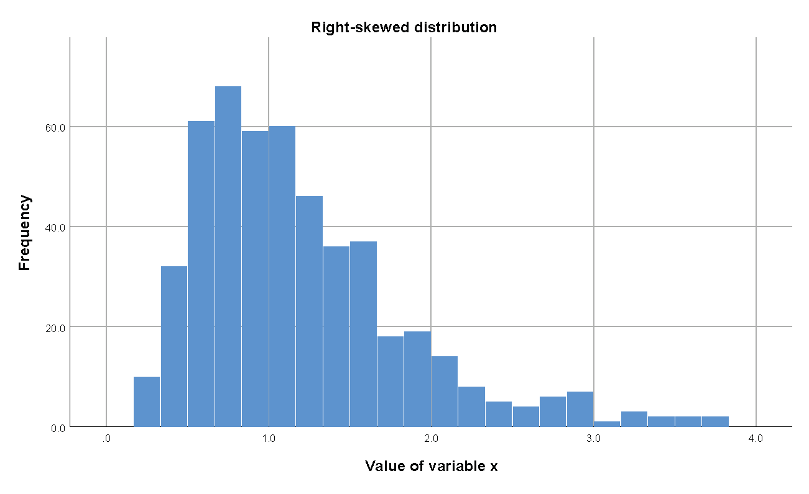 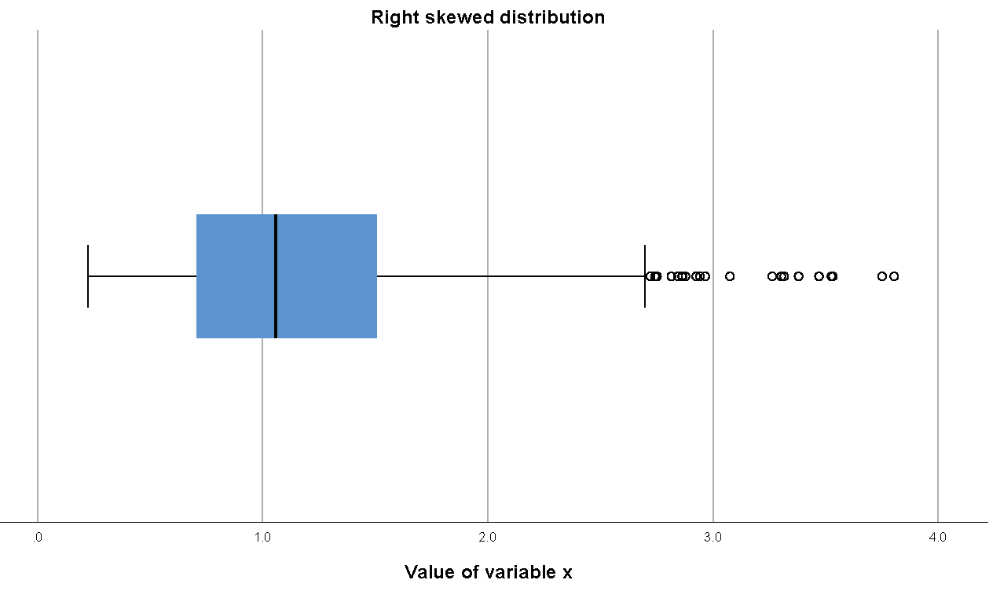Uniform
$N = 500$, $\overline{x} = 0.51$, $s = 0.29$, median$= 0.48$, no mode
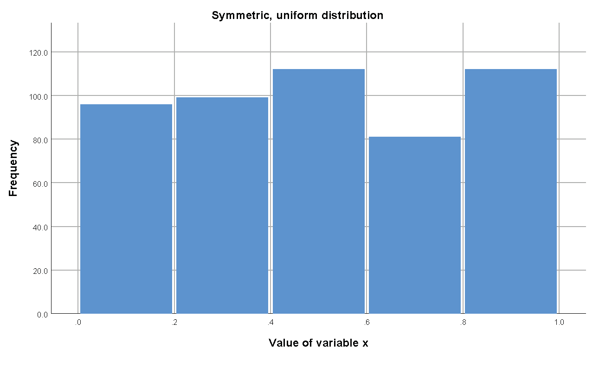 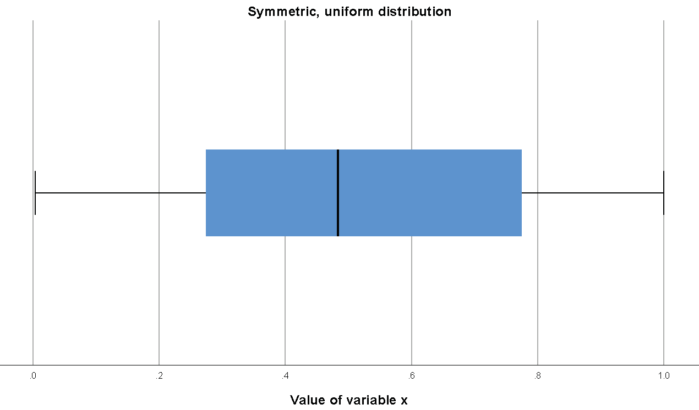Goals of this lesson
- Understand the meaning of percentiles
- Understand the elements of the five number summary: min, Q1, median, Q3, max
- Compute the five number summary
- Read a box plot
- Compute the IQR and describe how SPSS uses it to detect outliers
- Compute arbitrary percentiles from a data set
- Understand when to use histograms and boxplots
Reading
Textbook section 2.3: Measures of the Location of the Data
Textbook section 2.4: Box plots